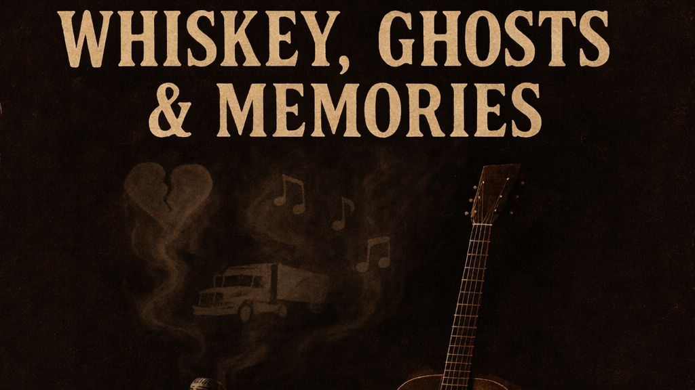

Whiskey, Ghosts, and the Long Road Home

The following feature is now included in our online magazine which is also available in print.
Issue #10
Online Magazine | Print MagazineWhiskey, Ghosts, and Memories does not hurry to get its point across. This six-track EP from Ron the Trucker has the tempo of one who has lived with these stories for long enough to understand that they are not going to fade away simply because you tell them once. This record, which has its foundations in country and Americana, has more of the feel of a chat that takes place late at night.
Right from the start, it is apparent that this record is intended to be listened to from start to finish. Each song segues nicely into the next, creating an imperfect but deliberate trajectory that follows love, loss, faith, and the quiet accounting of time. These songs are not ones intended to be listened to in isolation. They function best as chapters, each lending weight to those preceding it. In the end, the listener has not only absorbed these songs, but has inhabited an emotional space.
The writing in the songs of Ron the Trucker is steady and sure. His songs value clarity over cleverness; they state what they have to say directly and in a straightforward way. There is no flowery language in the songs of Ron the Trucker; the words are plain but not empty of meaning. Every word in the songs of Ron the Trucker seems to be well-earned. There is a definite sense of place in the songs of Ron the Trucker; not just physical place but also a sense of a place in the heart where the noise has receded.
The recording reflects that level of control. Everything is in its proper place, serving the tales rather than upstaging them. The guitars have a played-in quality. The beats are contemplative. Breathing room is given to exist between the phrases, allowing a word to sink in completely before the next idea comes along. It is a reminder of a day when country and Americana albums relied on the song to carry the load.
What’s most striking, however, is that these songs have a level of emotional realism that’s quite rare. “Whiskey, Ghosts and Memories” isn’t an album that tries to sentimentalize hardship or paper over regret. It’s one that lets faith and doubt occupy the same space. There’s loss, but not in a way that’s traumatic or dramatic. There’s love that’s complicated and lasting, not simplistic and absolute.
On a spiritual level, the EP fits right in with other minimalist albums by artists such as Townes Van Zandt, Guy Clark, and other songwriters in more contemporary circles who prefer a narrative first approach. There’s a certain element to the record that resonates with films that exist in a state of dialogue over action, in which the meaning is found in the quiet instead of the loud.
Ron the Trucker’s biography is important. As an independent artist, Ron the Trucker’s work is influenced by long hours and hard work and the experiences of personal loss. His songs demonstrate an awareness of the world and its experiences. There is no hype. There is no downplaying. The songs flow as if you were having a discussion with someone who knows enough to talk carefully.
The fact that he has founded Broken Soul Records, LLC, in Georgia, and that it is a company that distributes his music, further emphasizes that it is not his intention to produce mainstream music. This artist definitely stands by his ideals of artistic expression and honesty, rather than striving to produce something refined and popular. Whiskey, Ghosts and Memories is perfect for listeners who appreciate albums as a complete work, and not necessarily as a compilation of hooks. It will appeal to listeners of introspective country, singer-songwriter albums, and Americana that is based upon storytelling as opposed to spectacle. It is also perfect for playlists and environments where the emphasis is upon meaning and truth as opposed to sound. This EP doesn’t aim to change the world. It undertakes something much more subtle and much harder. It listens to itself and speaks out from it. This gives Ron the Trucker a record that has a solid, lived-in feel to it, and it rings true. If you are looking to hear music that understands the gravity of memories and the solace of telling the truth, then Whiskey, Ghosts and Memories is certainly worth your time.
This dispatch was last updated on January 17, 2026